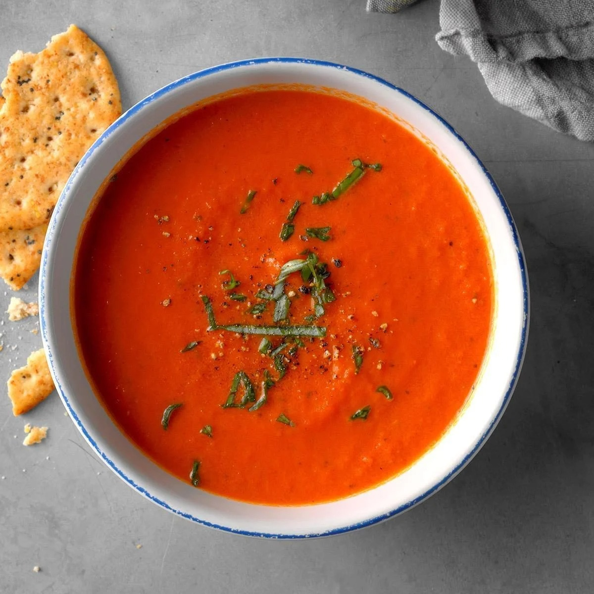
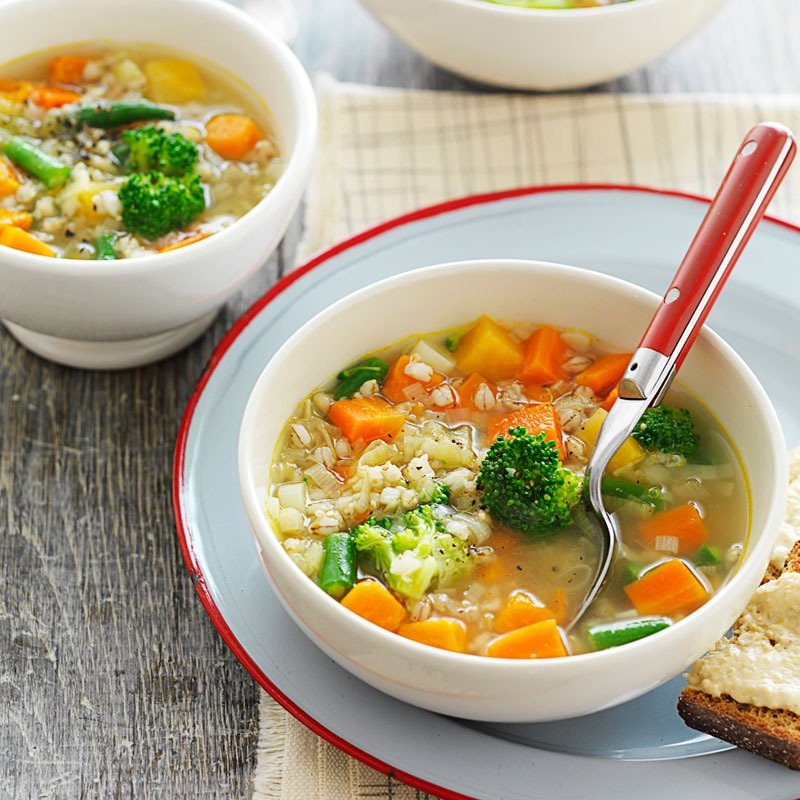

In a large saucepan, heat butter over medium-high heat;
saute mushrooms and onion until tender.
Mix flour, salt, pepper and 1 can broth until smooth;
stir into mushroom mixture. Stir in remaining can of
broth. Bring to a boil; cook and stir until thickened,
about 2 minutes. Reduce heat; stir in cream. Simmer,
uncovered, until flavors are blended, about 15 minutes,
stirring occasionally.

Tomato Soup
Step 1
In a large stock pot, combine tomatoes, chicken broth,
butter, sugar, onion, and baking soda. Bring to a boil
over medium-high heat; reduce heat to low and simmer for 1 hour.
Step 1
Stir in cream; cook until heated through and serve.

Vegetable Soup
Step 1
Heat 2 tablespoons olive oil in a large pot.
Stir in onions; cook and stir until the onion has
softened and turned translucent, about 5 minutes.
Add carrots and parsnips. Cover and cook until
vegetables have softened slightly, about 5 minutes.
Step 2
Stir in the pumpkin puree and stock.
Bring to a simmer and reduce heat to low.
Cover and let simmer until vegetables are tender,
about 40 minutes. Add lemon juice, salt, pepper,
and cilantro. Taste and adjust seasonings, if necessary.
Remove from heat and allow to cool.
Step 3
Ladle soup in batches into a food processor and blend
until smooth (or use an immersion blender).
If soup is too thick, thin with additional stock.
Return pureed soup to the pot and heat through.
Step 4
To make the garnish, heat olive oil in a small skillet.
Cook garlic and parsley over low heat 1 to 2 minutes.
Stir in paprika. Swirl a half teaspoon of garnish
on each serving of soup